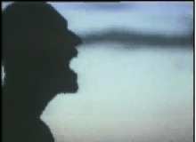
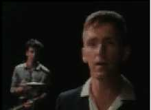
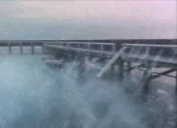
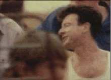
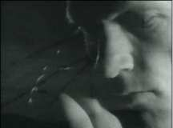
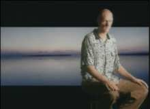

Warning!! - At present the Oils web server is unavailable, and so none of the links will work. A message will appear on the main page when the Oils site is back up.
Here are a few video clips of the Oils available for download from the official site! Be warned - they are big and the official site is slow.
Songs
Much of the information that appears below was obtained from the detailed information supplied on the DVD version of 20,000 Watt RSL - Visual Collection
Used And Abused
Made in: 1978
Directed by: ?
Location: Channel 7, Australia.
Cold Cold Change
Made in: 1979
Directed by: ?
Location: Channel 7, Australia.
US Forces
Made in: 1982
Directed by: Tony Stevens/Midnight Oil
Location: Vales Point Power Station, New South Wales (NSW).
Power & The Passion
Made in: 1983
Directed by: Ray Argall/Midnight Oil
Location: Darlinghurst and Woolloomooloo, Sydney.
Read About It
Made in: 1983
Directed by: Ray Argall/Midnight Oil
Location: Jenolan Caves, NSW.
Best of Both Worlds
Made in: 1984/85
Directed by: John Whitteron/Midnight Oil
Location: Sydney, NSW.
Pictures
Made in: 1986
Directed by: John Whitteron/Tony Stevens/Midnight Oil
Location: Various from archive footage.
The Dead Heart
Made in: 1986
Directed by: Ray Argall/Midnight Oil
Location: Uluru, Northern Territory (NT), Australia.
Beds Are Burning

Made in: 1987
Directed by: Andrew de Groot/Midnight Oil
Location: Mundi Mundi/Broken Hill/Redfern, NSW.
Put Down That Weapon

Made in: 1987
Directed by: Martin Stauce/John Wilkinson/Midnight Oil
Location: Sydney, NSW.
Dreamworld

Made in: 1988
Directed by: Andrew de Groot/Paul Elliot/Midnight Oil
Location: Coal Cliff/Sydney's Northern Beaches, NSW.
Blue Sky Mine

Made in: 1990
Directed by: Claudia Castle/Midnight Oil
Location: Kalgoorlie, Western Australia (WA).
King of the Mountain
Made in: 1990
Directed by: Larry Jordan
Location: New York/Los Angeles, USA.
Bedlam Bridge
Made in: 1990
Directed by: Claudia Castle/Midnight Oil
Location: New York, USA.
Forgotten Years

Made in: 1991
Directed by: Claudia Castle/Midnight Oil
Location: Verdun, France.
One Country

Made in: 1993
Directed by: Ken Duncan
Location: Sydney, NSW.
Truganini
Made in: 1993
Directed by: ?
Location: ?
My Country
Made in: 1993
Directed by: Claudia Castle
Location: Mojave Desert, USA.
Outbreak of Love
Made in: 1993
Directed by: Sally Bongers/Paul Elliott/Midnight Oil
Location: Centennial Park, Sydney, NSW.
In The Valley
Made in: 1993
Directed by: Paul Elliott/Midnight Oil
Location: Broome, WA.
Underwater
Made in: 1996
Directed by: Maurice Todman/Tim Bonython/Midnight Oil
Location: The Palace, Melbourne, Victoria.
Surf's Up Tonight
Made in: 1996
Directed by: Maurice Todman
Location: The Palace, Melbourne, Victoria.
White Skin Black Heart
Made in: 1997
Directed by: Andrew Lancaster/Midnight Oil
Location: Balmain Power Station, Sydney.
Redneck Wonderland
Made in: 1998
Directed by: ?
Location: ?
Cemetery In My Mind
Made in: 1998
Directed by: ?
Location: ?
Interviews
Peter Garrett 1 4.0MPeter Garrett 2 4.0M
Peter Garrett 3 3.4M
Peter Garrett 4 3.5M
Peter Garrett 5 6.0M
Rob Hirst 4.6M